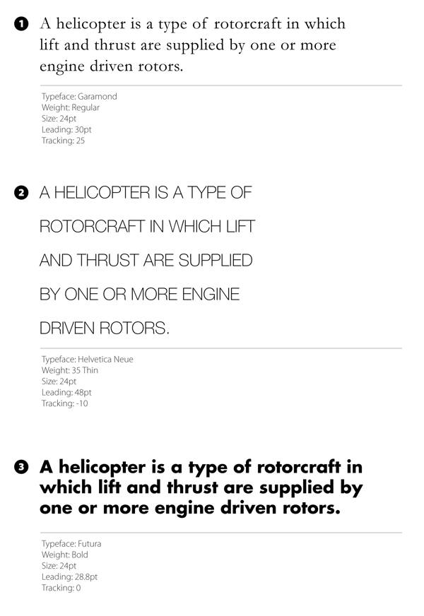
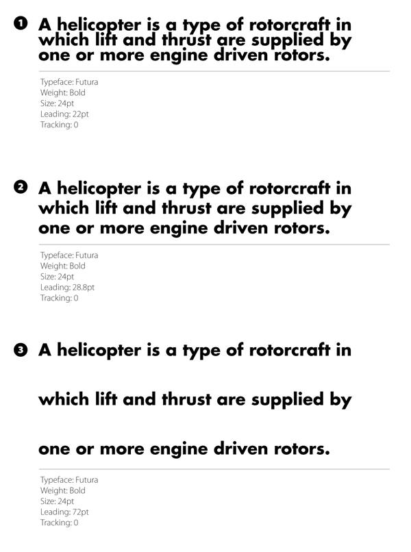
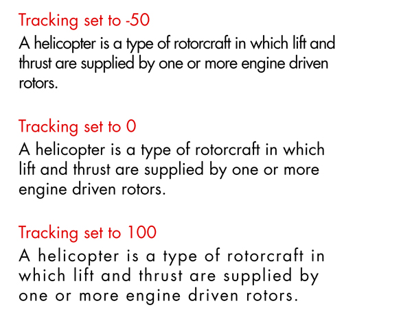
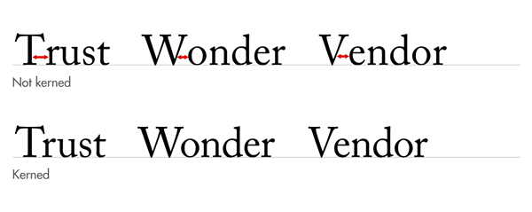
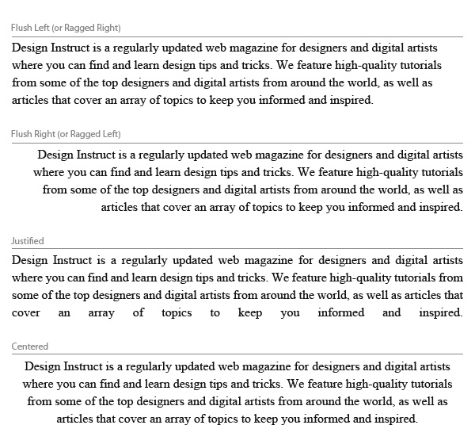
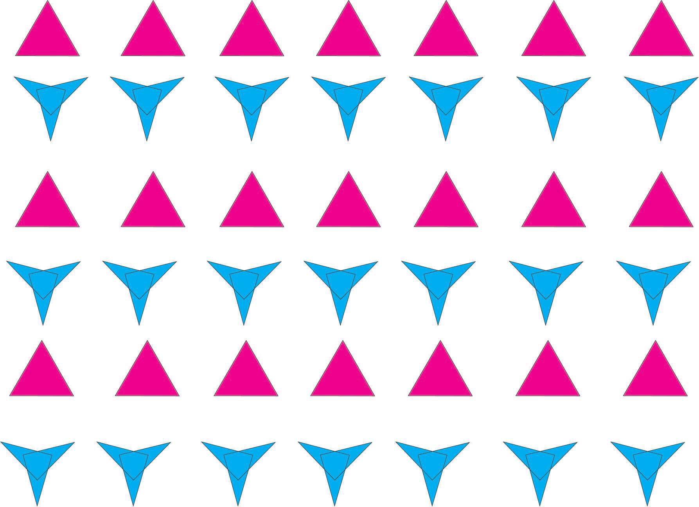
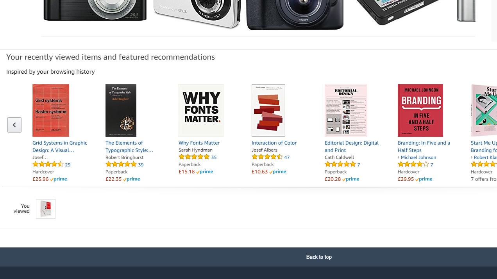
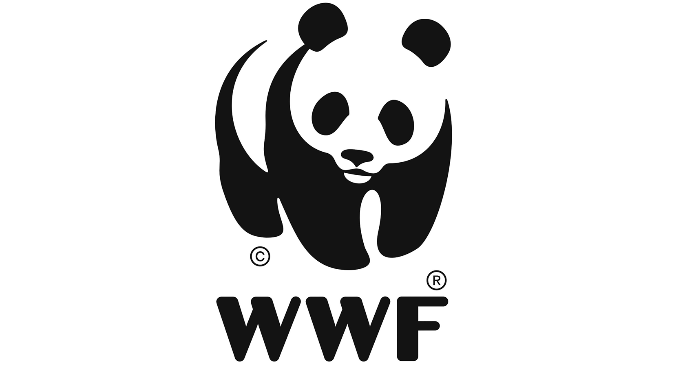

Når det kommer til at designe hjemmesider, så er brugen af de rigtige farver, meget vigtigt. Man smider ikke
bare to farver sammen og siger ”så er den klaret”. Det handler meget mere om psykologien bag farverne, og
hvordan de er med til at hjælpe med at sende de rigtige beskeder til brugeren. Samtidig så har hver farve
forskellig mening, alt efter hvilken person det er der kigger på dem. Det med at vælge farver er derfor ikke
bare lige til, og det er heller ikke noget videnskab, det kommer derimod helt op til den enkelte, og hvordan
de vælger at tage imod den her farve. Dog har man kommet med en general ide over hvordan farverne bliver
opfattet af de fleste mennesker, og samtidig også blevet grundlaget for hvordan man bruger farverne i dag, i
de forskellige designs.
Direkte Link til
farvepsykologi eksempelKilde: Klik her
Et eksempel kunne være at man prøver at designe en hjemmeside rettet mod kvinder, og det er derfor meget
oplagt at vælge en farve som lilla, da den appellere meget til kvinder, og er samtidig hadet af mænd. Her er
et eksempel over de populære brands, og meningen med deres farvevalg:
Direkte Link til
farvepsykologi 2 eksempelKilde: farvelaere.pdf (side 5)
Farvehjulet:
Når der snakkes om farver, og farvepsykologi, så kan man ikke komme udenom at nævne ”farvehjulet”.
Farvehjulets oprindelse var fra 1600-tallet da Isaac Newton påviste at lyset brydes gennem en prisme, og
man
fik mange forskellige farver ud på den anden side af prismen. Eksperimenterne han lavede med prismen,
fik
ham til at konkludere at blå, gul, og rød var de primære farver, da disse farver ikke kunne blandes af
andre
farver. Farvehjulets opbygning er således blevet etableret på den her måde i dag:
Direkte Link til
farvehjul eksempelKilde: farvelaere.pdf (side 8)
Det er meget vigtigt at nævne, at farvesystemet som vi kender det i dag stadig ikke er absolut, men
bygger
derimod på mange teorier og opfattelser af forskellige mennesker, og kan betyde noget forskelligt
fra kultur
til kultur.
Primære farver: rene farver
Sekundære farver: blandet af to primære farver
Tertiære farver: blandet af én primær og én sekundær farve
Farverum:
Når vi snakker om farver, så er det faktisk tale om to forskellige farvesystemer. Et additivt
farvesystem
(RGB), som står for ”Red, Green, Blue”. Her er der snak om farver som benyttes på
computeren og tv-skærme. Lys bliver tilføjet gennem kombinationen af farver, og kaldes derfor for et
”additivt” farvesystem.
Et subtraktivt farvesystem derimod indeholder farverne (CMYK) som står for ”Cyan”, ”Magenta”,
”Yellow”. Her bliver lyset trukket ud, jo flere af farverne man kombinerer sammen. Disse farver
bliver brugt mest til tryksager.
Kulør/HUE: er en graduering eller en variation af en farve
Mætning/Saturation: her snakker man om en kulør som bliver blandet
med forskellige mængder af gråtone. Man kan også sige at farven får sig en ”valør”
Lyshed/Brightness: en farve bliver blandet med ren sort, eller ren
hvid.
Farvesammensætning
Farverne har også en position på farvehjulet, og alt efter deres placering, og brug af dem, så har man valgt
at give de forskellige farvesammensætninger navne.
Monokrom: Én kulør.Kilde: farvelaere.pdf (side 12)Analog: Farven er indenfor et bredere spektrum, af lysheden og
mætningen.Kilde: farvelaere.pdf (side 12)Komplementære: Farver der ligger direkte overfor hinanden på
farvehjulet.Kilde: farvelaere.pdf (side 12)Split komplementære: Farver der ligger direkte overfor hinanden på
farvehjulet.Kilde: farvelaere.pdf (side 12)Triader: Tre farver som hver især ligger lige langt væk fra hinanden.Kilde: farvelaere.pdf (side 12)Tetriader (dobbelt komplementære): Fire farver som er komplementære til
hinanden.Kilde: farvelaere.pdf (side 12)
Webdesignerens farvepalette:
Som webdesigner er det meget vigtigt at man gør brug af hele sin farvepalette når man skal designe
hjemmesider. Man skulle gerne på en hjemmeside have brugt RGB farver, farvehjulet til at determinere hvilke
farver der ligger hvor, og dermed hvilke farver der hører sammen, valg af en grundfarve, og valg af en
accentfarve.
Typografi
Hvad er typografi egentlig? Typografi er IKKE kun skrifttypen på en tekst men derimod fonte, kolonner,
læsbarhed, layout, billeder og logoer. Typografi er kunsten i at kunne vælge den skriftstil, på den rigtige
hjemmeside, til læseren. Det er at kunne determinere hvorfor netop det er den skrifttype man har
valgt. Alt
efter hvilken skrifttype man har valg, og hvordan hvert bogstavs strøg er blevet brugt, så kan det få kæmpe
betydning for forståelsen , i en given kontekst. Her er en simpel illustration af hvad fonte, og andre
styles gør ved teksten:

Direkte Link til
typografi eksempelKilde: Klik her
Det er det at man bare kan skifte en lille ting, for så at kunne næsten ændre mening og/eller perspektiv
over teksten. Man har derfor en vis mængde kontrol over hvordan læseren skal opfatte teksten. Det er det der
gør typografi til et af designerens mest værdifulde værktøj.
Fontanatomi:
En linje med bogstaver har mindst fem linjer de forholder sig til når man skriver:
Baseline: det er den linje som hele teksten sidder på
Cap height (eller cap line): det er det højeste punkt på de store
bogstaver
Ascender height (eller topline): det er denne linje der viser hvor
et bogstav (majuskler) som h, eller k rører deres højeste punkt. Faktisk så er den her linje
lige en tand højere end det højeste punkt på de store bogstaver (Cap height).
X-height (eller midline): denne linje viser hvor højden af små
bogstaver (minuskler) går til, og (det ligger også i navnet) måles med bogstavet ”x”.
Descender height (eller beardline): det er de bogstaver som går
under baseline (bogstaver som p eller y), og viser hvor bunden af disse bogstaver ligger.
Typeface:
Når der snakkes om typefaces, så skal vi dykke ned i en skrifttype familie først. Under denne skrifttype
findes der ”weights”. Disse weights er med til at bestemme om skrifttypen er fed, kursiv, normal, eller
noget helt andet. Et typeface af en skrifttype familie, er samlingen af disse weights.
Leading:
Leading er med til at beskrive mellemrummet mellem to linjer tekst. Det er også kendt som ”line-height” i
CSS, og kan måles ved at først få fat i to baselines. Leading er stærkt stykke værktøj, idet det kan
bestemme hvor læsbar en tekst bliver. Jo mindre en leading jo tættere står linjerne op ad hinanden, og man
vil sandsynligvis som læser, næsten begynde at føle sig kvalt. Jo mere whitespace mellem linjerne, jo mere
vil man som læser, føle at man har god luft til at læse. Dog kan det sagtens blive for meget af det ene
eller det andet. En general regel er at jo flere store ord man har på en linke, jo mere leading skal man
bruge. Derudover så skal man også forhøje leading hvis mellemrummet mellem bogstaver er stort. Jo mere
mellemrum mellem bogstaverne, jo mere skal man forhøje leading. Eksempel på leading:

Direkte Link til
leading eksempelKilde: Klik her
Eksempel 1: her er leading sat til at være en værdi der er i minus
(en værdi der er mindre end skriftstørrelsen). Man kan se bogstaverne røre hinanden fra linje
til linje, og dette vil selvfølgelig påvirke læsbarheden.
Eksempel 2: her er leading sat til en ofte anbefalet værdi, som er
120% af størrelsen af skrifttypen. Dvs. hvis din skrifttype er 10pt, så skal leading være 12pt.
Eksempel 3: nu er leading sat til 200% af skriftstørrelsen, og det er
selvfølgelig får meget i denne kontekst. Det ødelægger fuldstændig flowet i teksten.
Tracking (eller afstand mellem bogstaver):
Dette hedder ”letter-spacing” i CSS, og et eksempel på tracking kunne se sådan her ud:

Direkte Link til
tracking eksempelKilde: Klik her
Tracking kan beskrives med ordene løs eller stram. At have en løs tracking er at have mere mellemrum mellem
en gruppe bogstaver, mens en stram tracking er når bogstaverne står meget tættere op ad hinanden. Tracking
har mere eller mindre de samme guidelines som leading har, og har også stor betydning for læsbarheden af
teksten. Jo længere en linje tekst er, jo løsere tracking skal man bruge, og omvendt, jo kortere en linke,
jo strammere en tracking.
Kerning:
Kerning er med til at bestemme afstanden mellem to bogstaver specifikt. Der bliver ofte en forvirring mellem
kerning og tracking. Tracking er at se på bogstaverne samlet, og derudfra bestemmer afstanden mellem dem,
mens kerning er at kigge ned på det mikroskopiske niveau, og bestemme afstanden mellem to udvalgte
bogstaver. Kerning er derfor muligheden for at justere afstanden mellem to bogstaver, for at gøre det
lettere at læse teksten, og så man også får et godt flow. Husk altid, at man som læser ikke lægger mærke til
god typografi, fordi at man som læser netop føler at det hele bare kører.

Direkte Link til
kerning eksempelKilde: Klik her
Alignment
Alt efter hvordan man vælger at aligne sin tekst, så vil det selvfølgelig også få konsekvenser for hvordan
en læser opfatter teksten, og om de føler at teksten er let at læse. At kunne bestemme alignment, er helt op
til en selv, og kommer an på ens eget tema. Her er eksempler på hvordan man kan aligne teksten:
Flush left: her er teksten forskudt til venstre, og er også den mest
naturlige form for alignment, her i vesten.
Flush right: teksten er forskudt mod højre, dette kan være med til
at ødelægge flowet for os som læser fra venstre til højre, og skal ikke bruges som en norm, men
derimod som et værktøj som kan skabe kontrast mellem de forskellige afsnit og linjer.
Justified: er når starten og slutningen af en linje tekst, er begge
aligned til venstre og højre. Selvom justified ser ret god ud i sig selv, så kan det være lidt
svært at læse for nogen, da der er mindre visuel feedback på når en linje er slut.
Centered: her er teksten centreret til midten af boksen i stedet for
kanterne. Endnu en gang skal man passe på med hvordan man bruger centered, da det også kan være
med til at ødelægge flowet af en tekst.
Her er et eksempel på ovenstående termer:

Direkte Link til
alignment eksempelKilde: Klik her
Når man skal skrive en tekst, er det derfor en god ide at overveje følgende ting:
Hvilken skrifttype skal min titel have?
Hvilken skrifttype skal min brødtekst, og undertitler have?
Hvor skal jeg bruge bold (fed skrift), italic (kursiv skrift) eller
light (normal skrift)?
Gestaltlove
Gestaltlovene handler alle sammen om at kunne se helheder, at hurtigt kunne spotte ligheder, patterns og
lignende. Menneskets hjerne er rigtig god til at fylde huller ud, med noget som den tror passer ind med
resten, og er også derfor at vi ser ansigter, former og figurer i noget som ellers ikke skulle forestille
dette. Hjerne prøver egentlig stort set at simplificere komplekse designs og billeder, ved at fylde alle
huller ud således at den får noget der er organiseret, og giver mening, i stedet for noget tilfældigt. Under
gestaltlovene findes der seks forskellige love og de er som følger:
Similarity (Lighed)
Continuation (Kontinuation)
Closure (lukkethed)
Proximity (nærhed)
Figure/Ground
Symmetry and Order (symmetri og orden)
Common fate
Similarity (Lighed):
Når der snakkes om similarity, så snakkes der om visuelle elementer som er ens, hvad end det er i størrelse,
form, farve eller retning. Alt der går indenfor disse attributter, vil hjerne vælge at gruppere som en
gruppe. Farven er den bedste og stærkeste måde at skabe lighed på, eksempelvis så kan det bruges i link,
eller i navigation, for at understøtte at alle med lige præcis den farve, er en helhed. Man kan derfor i
design nemt fortælle en bruger på en hjemmeside, hvad det er der hører sammen, for så at gøre det nemt for
brugeren at danne sig et overblik over disse elementer. Dette vil selvfølgelig også være med til at gøre
bruget af sitet lettere og mere intuitivt. Eksempel på similarity:

Direkte Link til
similarity eksempelKilde: Klik her
Continuation (kontinuation):
Objekter der ser ud til at være kontinuere i en lang række eller bue, kalder vi for ”continuation”. I design
af en hjemmeside kunne de eksempelvis være paragraffer, billeder eller grafer (hvad end det er vertikale
eller horisontale). Denne form for brug af design, er med til at kommunikere kvalitet, og relation til
brugeren af sitet. Den hjælper også med at guide brugeren rundt, på en sti der er nem at følge. Eksempel på
continuation:

Direkte Link til
continuation eksempelKilde: Klik her
Closure (lukkethed):
Closure omhandler dele af figurer eller billeder som kommer sammen, eller som står tæt op af hinanden for at
kunne danne en helhed. Det er simpelthen ideen at hjernen skal kunne selv fylde hullerne ud i designet, for
så at kunne skave en helhed. Det er meget ofte brugt i logo design, da det er der man kan lade hjernen løbe
løbsk, med hvilket som helst design som det skulle være. Et eksempel på closure kunne se sådan her ud:

Direkte Link til
closure eksempelKilde: Klik her
Proximity (nærhed):
Her er objekter der er nære eller tætte på os opfattet som at være relateret, i en højere grad end objekter
der ligger langt væk. Det er faktisk ét af de første principper som rammer opfattelsesevnen i hjernen, og
”vinder” over lighed i farver/kontrast. Ved at tilføje whitespace (mellemrum) mellem figurer og billeder, så
kan vi som designere separere dem fra hinanden, og mindske relationen. Omvendt kan vi øge relationen ved at
samle objekter sammen, og mindske mellemrummet imellem dem. Alt dette kan endda opnås uden brug af kasser,
eller grænser rundt om figurerne, billederne osv. Et eksempel på proximity kunne se sådan her ud:
Direkte Link til
proximity eksempelKilde: Klik her
Figure/Ground:
Figure/Ground princippet ligner meget closure idet at den tager fordel i at hjernen selv skal fylde hullerne
ud i designs og billeder osv. Her vil hjernen prøve at skelne mellem figurer og former der ligger både i
baggrunden og i forgrunden. Dette kan alt sammen blive meget brugbart idet at designeren kan vælge hvad der
skal være fokus på, på et website. Det kunne eksempelvis være en fade effekt, således at baggrunden blev
mere utydelig, imens forgrunden kommer frem i fokus. Et eksempel på denne lov kunne se sådan her ud:
Direkte Link til
figure/ground eksempelKilde: Klik her
Symmetry and Order (symmetri og orden eller prægnans):
Denne lov siger at hjernen vil prøve at opfatte figurer og former på en så simpel måde som muligt.
Eksempelvis så vil ringene i det olympiske symbol, opfattes som en kollektion af fem cirkler, i stedet for
tilfældige streger i buer. Ellers kunne man tage et logo jeg har brugt på forsiden for ”Design” kategorien.
Selvom figurerne overlapper, så kan man sagtens se at designet er lavet ud af en trekant, en firkant og en
cirkel. Her er endnu et eksempel på symmetry and order:
Direkte Link til
symmetry and order eksempelKilde: Klik her
Common fate:
Common fate var faktisk ikke med i gestalt teorien til at starte med, men man har siden da valgt at
inkludere den med i UX-design. Loven siger at folk vil prøve at gruppere ting der ser ud til at vende den
samme vej, og som har den samme retning (bevægelse). Dette kan også ses i vores natur som vi allerede kender
den, og kunne eksempelvis være en flok fugle som flyver i formation i samme retning, eller en masse fisk som
svømmer i samme retning. Her er et eksempel på common fate:
Direkte Link til
common fate eksempelKilde: Lavet af Ahmad Azzam
 Direkte Link til
farvepsykologi eksempel
Kilde: Klik her
Et eksempel kunne være at man prøver at designe en hjemmeside rettet mod kvinder, og det er derfor meget
oplagt at vælge en farve som lilla, da den appellere meget til kvinder, og er samtidig hadet af mænd. Her er
et eksempel over de populære brands, og meningen med deres farvevalg:
Direkte Link til
farvepsykologi eksempel
Kilde: Klik her
Et eksempel kunne være at man prøver at designe en hjemmeside rettet mod kvinder, og det er derfor meget
oplagt at vælge en farve som lilla, da den appellere meget til kvinder, og er samtidig hadet af mænd. Her er
et eksempel over de populære brands, og meningen med deres farvevalg:
 Direkte Link til
farvepsykologi 2 eksempel
Kilde: farvelaere.pdf (side 5)
Direkte Link til
farvepsykologi 2 eksempel
Kilde: farvelaere.pdf (side 5)
 Direkte Link til
farvehjul eksempel
Kilde: farvelaere.pdf (side 8)
Det er meget vigtigt at nævne, at farvesystemet som vi kender det i dag stadig ikke er absolut, men
bygger
derimod på mange teorier og opfattelser af forskellige mennesker, og kan betyde noget forskelligt
fra kultur
til kultur.
Direkte Link til
farvehjul eksempel
Kilde: farvelaere.pdf (side 8)
Det er meget vigtigt at nævne, at farvesystemet som vi kender det i dag stadig ikke er absolut, men
bygger
derimod på mange teorier og opfattelser af forskellige mennesker, og kan betyde noget forskelligt
fra kultur
til kultur.
 Et subtraktivt farvesystem derimod indeholder farverne (CMYK) som står for ”Cyan”, ”Magenta”,
”Yellow”. Her bliver lyset trukket ud, jo flere af farverne man kombinerer sammen. Disse farver
bliver brugt mest til tryksager.
Et subtraktivt farvesystem derimod indeholder farverne (CMYK) som står for ”Cyan”, ”Magenta”,
”Yellow”. Her bliver lyset trukket ud, jo flere af farverne man kombinerer sammen. Disse farver
bliver brugt mest til tryksager.

 Monokrom: Én kulør.
Kilde: farvelaere.pdf (side 12)
Monokrom: Én kulør.
Kilde: farvelaere.pdf (side 12)
 Analog: Farven er indenfor et bredere spektrum, af lysheden og
mætningen.
Kilde: farvelaere.pdf (side 12)
Analog: Farven er indenfor et bredere spektrum, af lysheden og
mætningen.
Kilde: farvelaere.pdf (side 12)
 Komplementære: Farver der ligger direkte overfor hinanden på
farvehjulet.
Kilde: farvelaere.pdf (side 12)
Komplementære: Farver der ligger direkte overfor hinanden på
farvehjulet.
Kilde: farvelaere.pdf (side 12)
 Split komplementære: Farver der ligger direkte overfor hinanden på
farvehjulet.
Kilde: farvelaere.pdf (side 12)
Split komplementære: Farver der ligger direkte overfor hinanden på
farvehjulet.
Kilde: farvelaere.pdf (side 12)
 Triader: Tre farver som hver især ligger lige langt væk fra hinanden.
Kilde: farvelaere.pdf (side 12)
Triader: Tre farver som hver især ligger lige langt væk fra hinanden.
Kilde: farvelaere.pdf (side 12)
 Tetriader (dobbelt komplementære): Fire farver som er komplementære til
hinanden.
Kilde: farvelaere.pdf (side 12)
Tetriader (dobbelt komplementære): Fire farver som er komplementære til
hinanden.
Kilde: farvelaere.pdf (side 12)